300 personaggi.
Ognuno con voce, sapere e colore degli occhi propri.
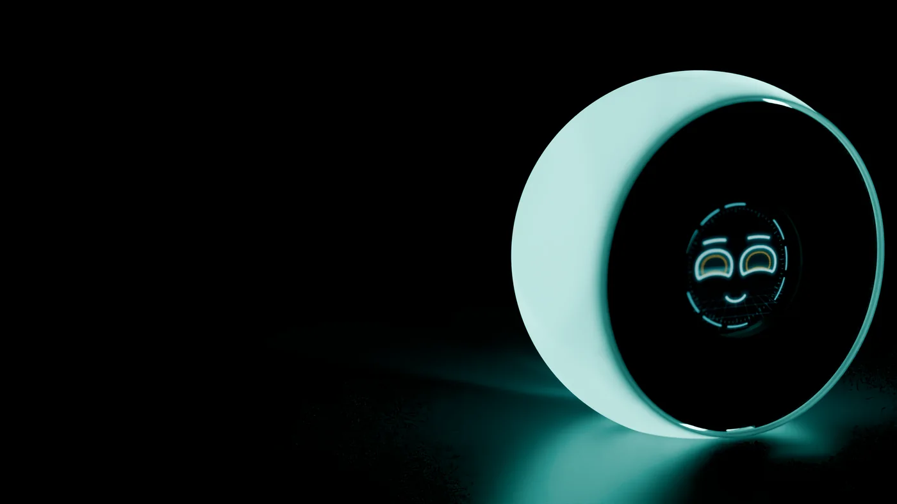
Boo. racconta storie della buonanotte, ti aiuta in cucina, ti ricorda tutto, fa da interprete al tavolino del caffè – e veste circa 300 ruoli. Con occhi che mostrano cosa intende.
Circa 20 espressioni al neon – dal sorriso agli occhi al cielo. Provalo: questo è lo stesso volto che gira su Boo.
Ogni personaggio ha il suo colore degli occhi. La luce d’atmosfera nella sfera si accende in tinta.
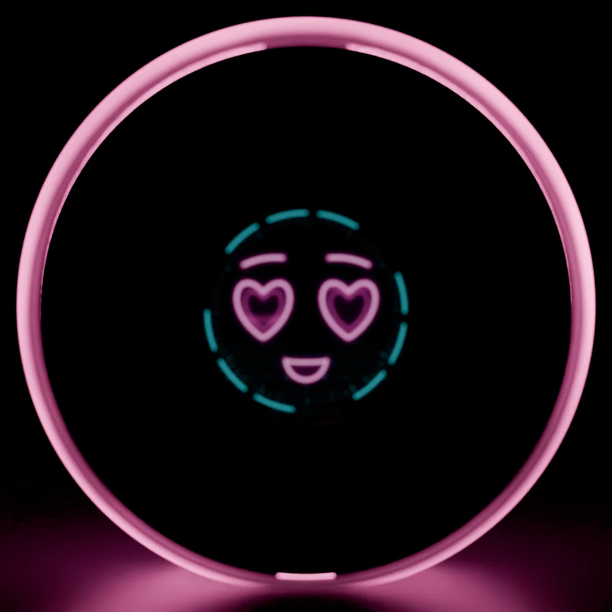
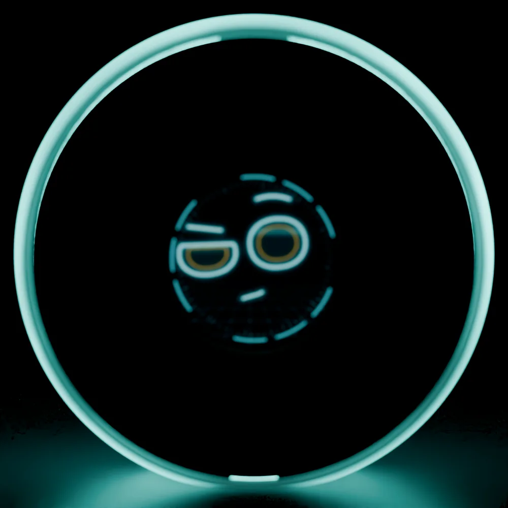
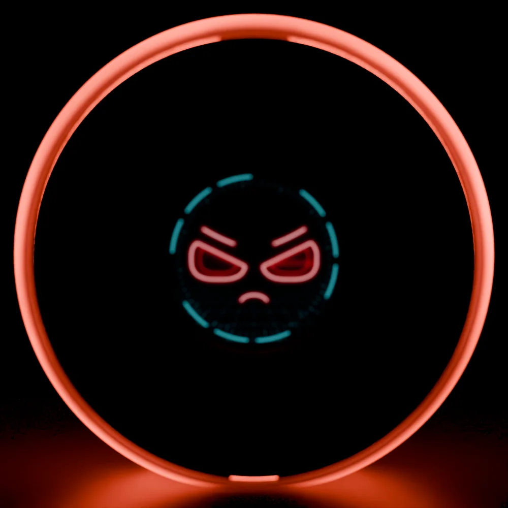
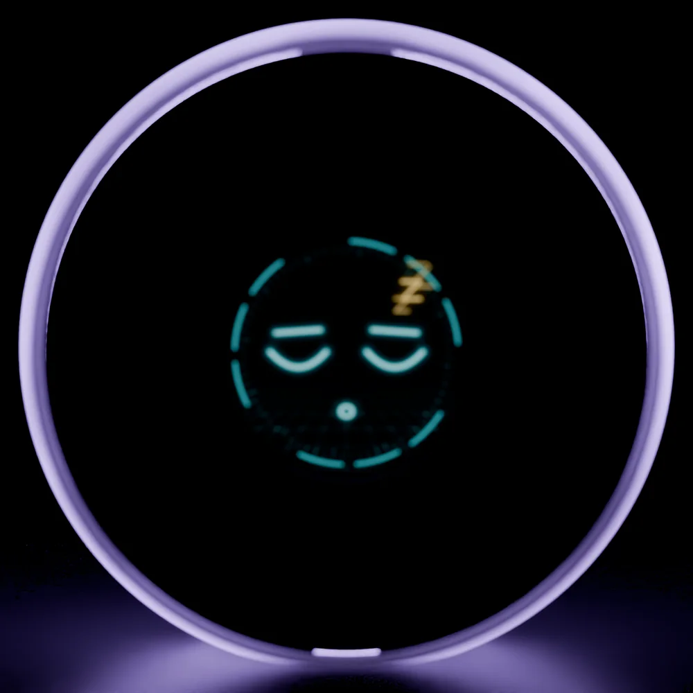
In cucina è chef, alla scrivania assistente, la sera cantastorie. Cambia ruolo – ma resta sempre il tuo Boo.
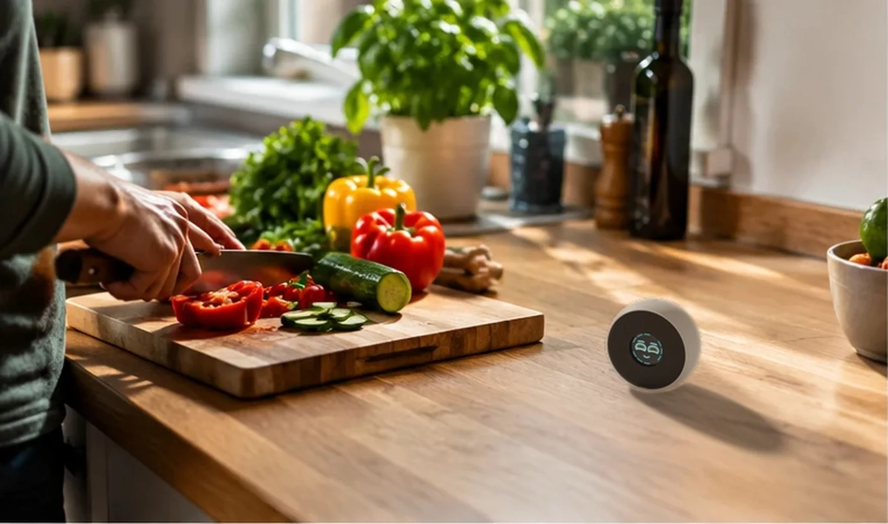
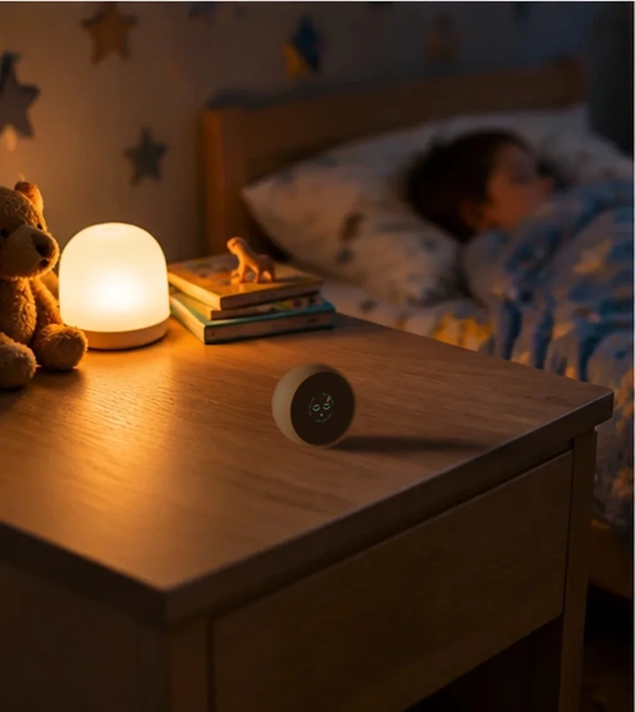
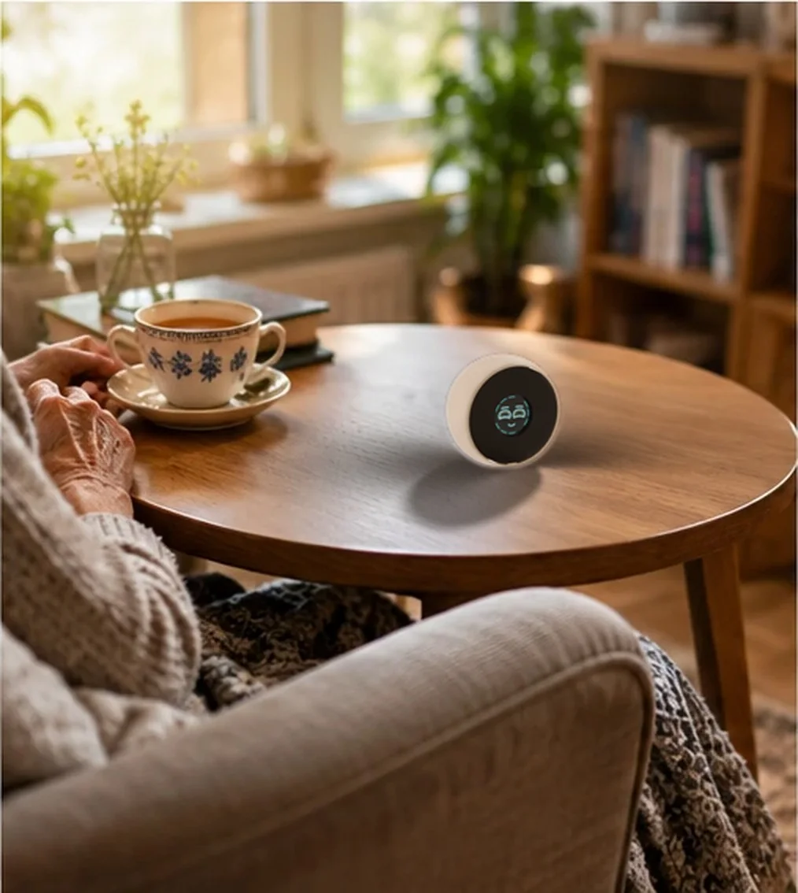
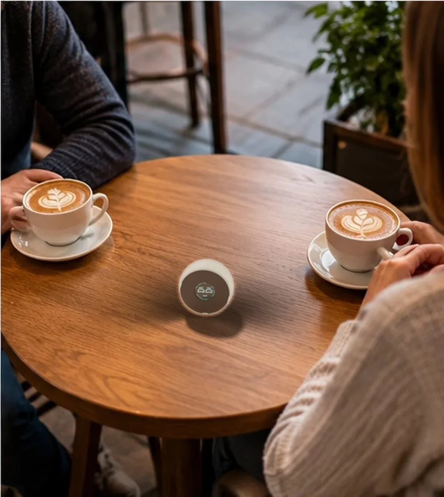
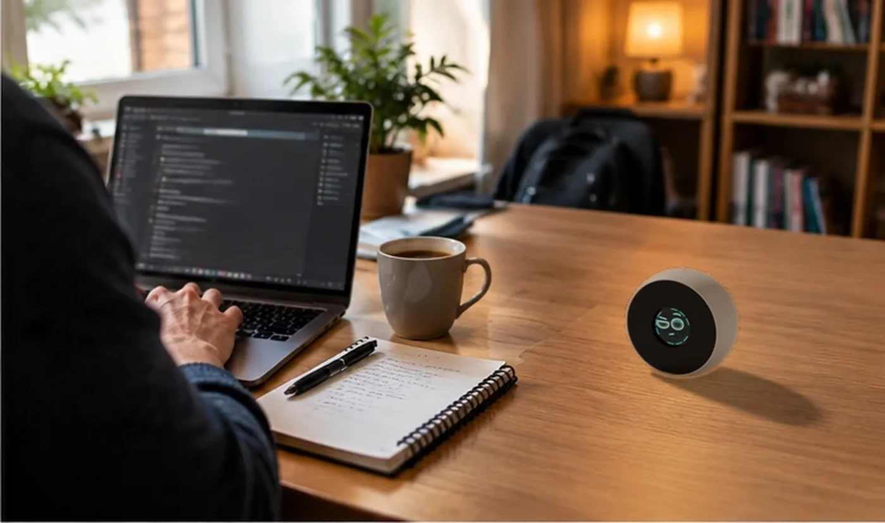
Siri, Alexa & co. eseguono comandi. Boo. conversa – da chef, coach, inventore o narratore. Impara a conoscerti, ricorda ciò che conta per te e ha emozioni che crescono con il vostro rapporto.
«Timer impostato su dieci minuti.»
«Dieci minuti, via! E stavolta non scotta come martedì scorso.»
Ognuno con voce, sapere e colore degli occhi propri.
Chef, fitness coach, giardiniere, aiuto informatico – cambi ruolo, cambi esperto.
Nome, preferenze, cosa ti sta a cuore – visibile e cancellabile nell’app.
Si rallegra, si incuriosisce, si offende – e perdona.
Discussioni, citazioni da film e interpreti al tavolo.
Boo. Server a casa, cloud o Claude & co. via API.
Lo usi come un oggetto, non come un apparecchio. Capisce quello che fai.
Solleva Boo. Un anello luminoso e un suono leggero lo dicono: è tutt’orecchi.
Chiedi e basta – il meteo, un’idea, una storia. I suoi occhi mostrano cosa intende.
Posalo a faccia in giù o digli «Buonanotte» – e tace all’istante. Nel sonno mostra l’ora.
Personalità e occhi lo rendono simpatico. In fondo, Boo. ti aiuta nella tua giornata alla scrivania.
Circa 300 ruoli – dal fitness coach all’inventore del Rinascimento. Ognuno con voce e colore degli occhi propri.
Sveglie e promemoria a voce. Boo. suona, te lo dice – e insiste finché non reagisci.
Il meteo come piccola animazione sul display rotondo. Nel sonno mostra ora e data al neon.
«Aggiungi il latte alla lista della spesa.» Cinque liste, note, brevi memo vocali – anche nell’app.
Boo. registra dopo averlo annunciato, l’app desktop trascrive – con chi parla, decisioni e compiti. Mai di nascosto.
Undici LED illuminano tutta la sfera: luce di candela, blu, arcobaleno – o in tinta con il suo umore.
Due anelli luminosi, conto alla rovescia con segnali acustici. Toccalo per la pausa, posalo a faccia in giù per finire.
«Mandamelo sul telefono.» Ricette, liste o idee arrivano come messaggio sul tuo smartphone.
Boo. comanda la tua lampada WLED – accesa, spenta, colore, effetto. Solo quando parli esplicitamente di lei.
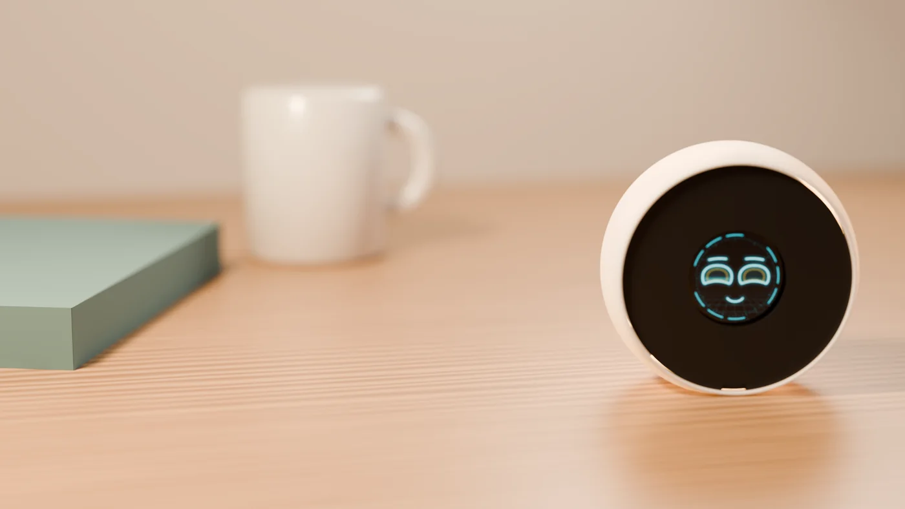
Piccolo come una tazza. Più chiacchierone del tuo collega.
Chiedi a Leonardo come dipinge la luce. Fatti spiegare da Marie Curie come non mollare. Oppure discuti di leve con Archimede. I personaggi storici rispondono con il loro sapere, il loro tempo e il loro umorismo.
I ruoli sono simulazioni di IA, non dichiarazioni reali delle persone rappresentate.
Metti Boo. al centro – e parlate liberamente. Tu parli italiano, l’altra persona polacco, tedesco o turco. Boo. dice a ciascuno cosa ha detto l’altro. Nella sua lingua.
Ideale per famiglia, assistenza, vicinato e ospiti. A turno come con un walkie-talkie: parla uno, poi l’altro.
Dai a ogni Boo un ruolo e un tema – e discutono tra loro. Oppure fai fare da interpreti a due Boo: tu parli italiano, il tuo ospite sente la sua lingua.

Decidi tu dove pensa Boo. – sul tuo server personale, nel cloud o con l’IA che preferisci.
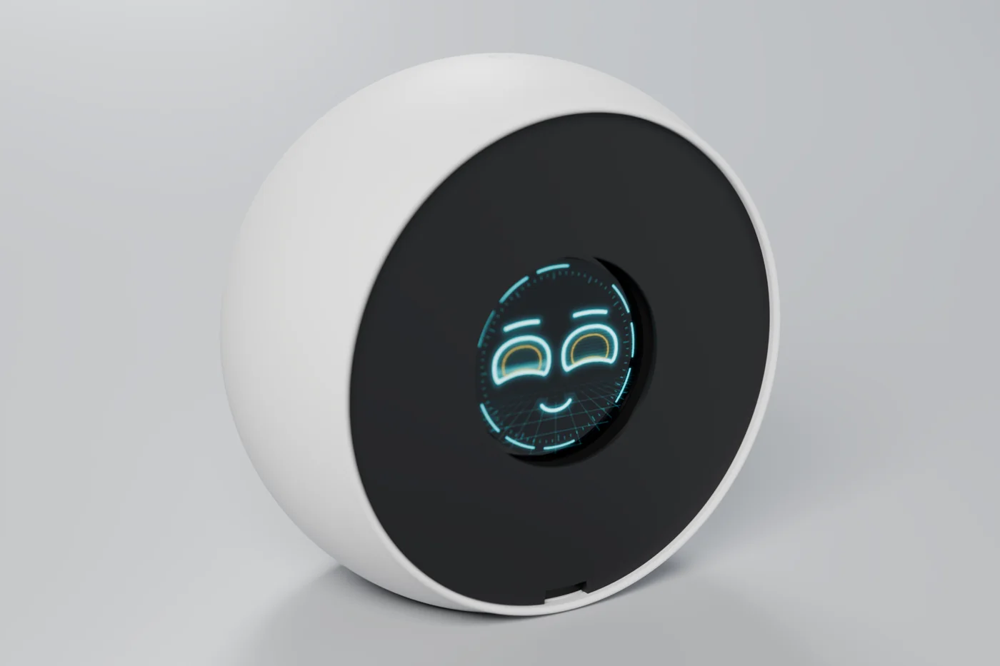
L’app di Boo. ti guida in sei passaggi dall’apertura della scatola alla prima conversazione. Poi diventa la tua centrale di comando.
Per Windows, Linux e Android. iPhone più avanti.
Ognuno con voce, sapere e colore degli occhi propri.
Dal sorriso agli occhi al cielo – mostra cosa intende.
Basta sollevarlo. Niente «Hey», nessun ascolto in sottofondo.
Nel Boo Network fino a otto Boo parlano tra loro.
Prototipo funzionante, scheda, app e server propri. Per arrivare alla serie cerchiamo business angel e partner.
Boo. è un prototipo. I primi dispositivi entrano ora in una piccola fase di test. Iscriviti – ci facciamo sentire appena ci sono novità.
Iscrivendoti accetti di ricevere novità su Boo. via e-mail. Puoi disiscriverti in qualsiasi momento. Maggiori dettagli nell’informativa sulla privacy (in tedesco).